Keypad Scanner
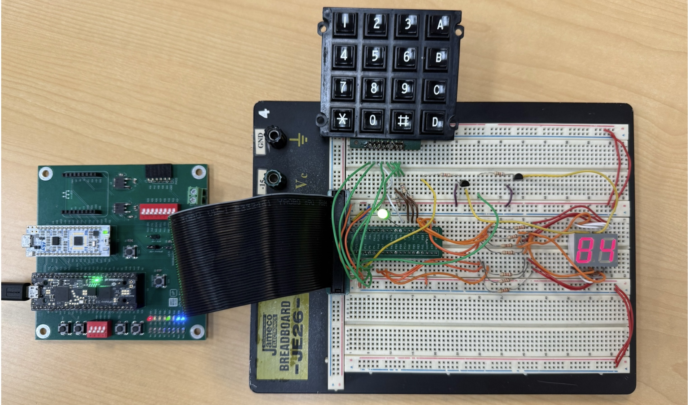
Introduction
In this lab, a digital circuit was implemented on the FPGA to scan a 4×4 matrix keypad and display the last two hexadecimal digits pressed on a dual seven-segment display. Each key press was registered exactly once, regardless of how long the key was held, and additional inputs were ignored while one key remained pressed. The design used a slow clock divider for debouncing, a synchronizer to handle asynchronous inputs, and a finite state machine (FSM) to control scanning and key registration. Simulations verified correct functionality before programming the FPGA for final testing.
Design and Testing Methodology
When interfacing mechanical inputs with digital systems, two key challenges must be addressed: switch bouncing and metastability. Switch bouncing occurs when a button press causes rapid transitions between logic levels before settling, often leading to multiple false detections. Metastability, on the other hand, arises when asynchronous signals from user inputs do not align with the system clock, potentially causing undefined or unstable logic states. Accounting for both circumstances was essential to ensure reliable key registration and predictable circuit behavior.
A slow clock divider reduced the 48 MHz system clock to 240 Hz, providing sufficient time between samples to eliminate switch bounce. A two-stage synchronizer stabilized asynchronous signals from the keypad to prevent metastability. The main control logic was implemented as a finite state machine (FSM) that sequentially scanned each keypad row, detected valid presses, and ensured that only one key was registered per activation.
FPGA Design
The FPGA implementation consisted of several SystemVerilog modules:
At the top level (lab3_bb.sv), the internal high-speed oscillator (HSOSC) provided a 24 MHz clock, which was divided down by a counter to a slow clock of approximately 240 Hz. This slower clock was used both for keypad scanning and seven-segment display multiplexing, ensuring stable visual output and eliminating flicker or “ghosting.”
The sub-modules were:
synchronizer.sv – Implements a two-stage flip-flop synchronizer to align asynchronous keypad inputs, rows and columns to row_sync and col_sync the system clock, preventing metastability.
keyscan.sv – A FSM that cycles through each keypad row, waits for settling, detects single key presses (active high press), and generates one-shot enable signals. It also locks out additional inputs while a key is held.
debounce.sv – Uses a counter-based filter to ensure that a signal must remain stable for multiple clock cycles before being accepted as valid, removing the effects of switch bounce.
keydecoder.sv – Converts the synchronized row and column pair into the corresponding hexadecimal digit.
sevenseg.sv – Drives the dual seven-segment display using time multiplexing; the most recent digit is displayed on the right.
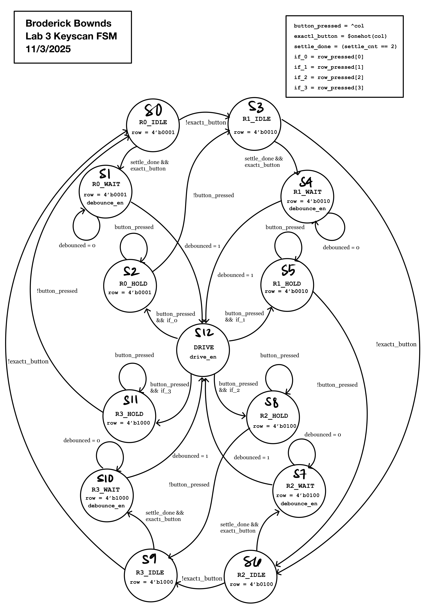
keyscan.sv module showcasing each input and output by powering columns and driving rows.Technical Documentation
The source code for the project can be found in the associated GitHub repository.
Block Diagram
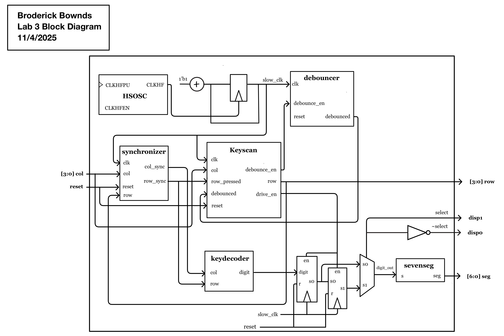
Schematic
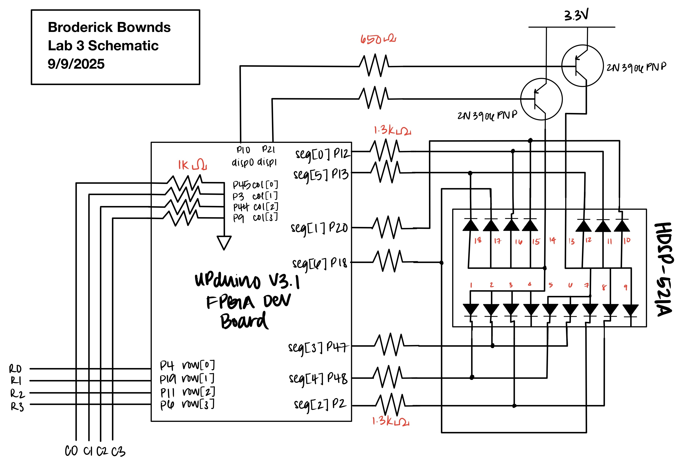
Testbench Simulations
Each major SystemVerilog module was verified through an individual testbench in QuestaSim to confirm correct functionality before integration. These simulations validated signal timing, state transitions, and inter-module communication, ensuring that each component operated as intended. This modular testing approach demonstrated the design’s robustness and reusability, allowing issues to be isolated and resolved early before full system synthesis on the FPGA.
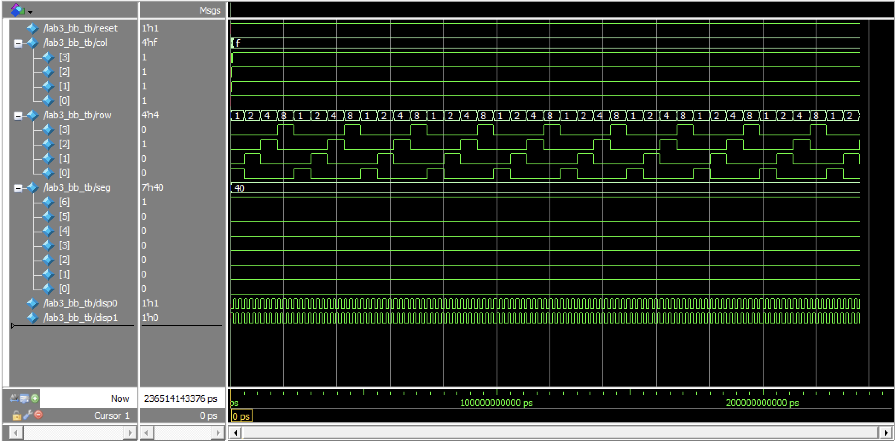
lab3_bb.svoverall functions properly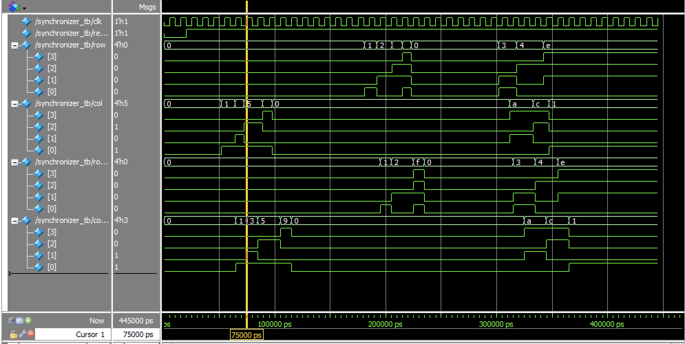
synchronizer.svoverall functions properly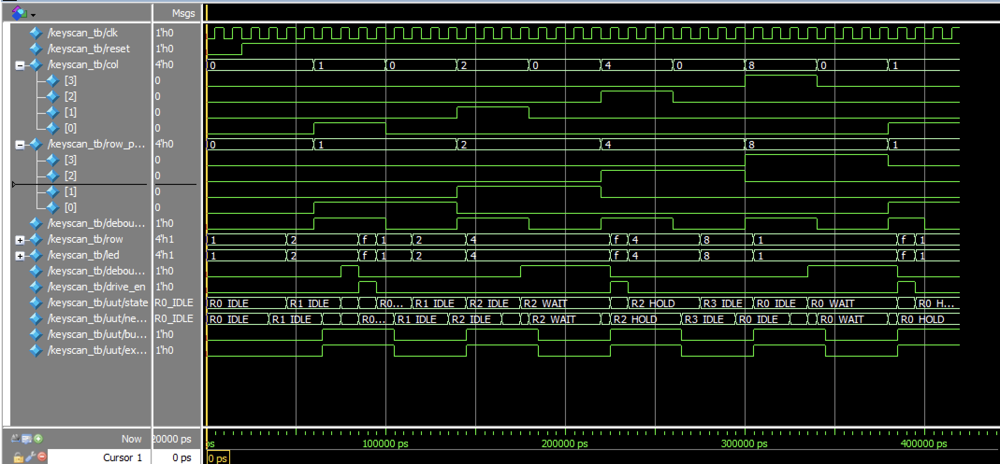
keyscan.svoverall functions properly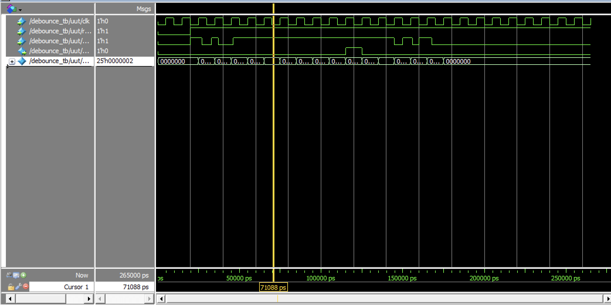
debounce.svoverall functions properly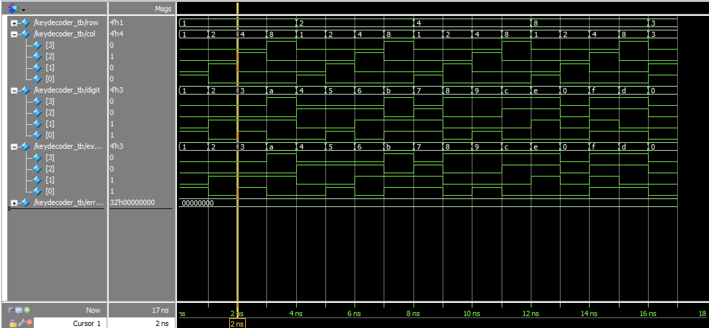
keydecoder.svoverall functions properlyConclusion
In this lab, I successfully designed and implemented a keypad scanner on the FPGA that detects and displays key presses on a dual seven-segment display. The system was able to correctly register a single keypress at a time while handling switch bounce and ignoring simultaneous multiple inputs. The design process involved developing a reliable scanning and debouncing circuit, verifying functionality through simulation, and testing the hardware for consistent performance and display stability. Overall, the keypad interface worked as expected, with clear and stable output on the display. This lab helped reinforce important concepts in synchronous digital design, such as timing control, debouncing, and state machine implementation. I spent 87 hours to complete the lab.
AI Prototype Summary
LLM Prompt A: Whole Lab (Monolithic)
Target device: Lattice iCE40 UP5K FPGA with internal high-speed oscillator (~20 MHz).
Write synthesizable SystemVerilog to scan a 4×4 matrix keypad and display the last two hex keys pressed on a dual 7-segment display. Implement:
- A clock divider that derives a scan clock on the order of 100–200 Hz.
- A keypad scanning controller that iterates one active-low column at a time and samples rows, registering at most one key per press (debounce-by-design).
- A top-level module that updates two hex digits (older and most recent) when a new key is registered and drives a time-multiplexed display without flicker.
Use idiomatic SystemVerilog (logic, always_ff, enumerated states for FSMs). Keep all state synchronous and well-commented.
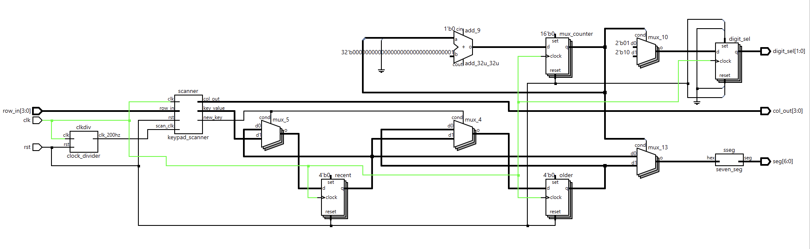
The LLM performed impressively in generating ax complete, synthesizable SystemVerilog design that met the project requirements for the Lattice iCE40 UP5K FPGA. It correctly structured the design into modular components using correct SystemVerilog syntax like always_ff, enumerated states, and clear signal naming. The code was synthesizable. Overall, the LLM’s output demonstrated a solid understanding of hardware design principles and FSM-based control logic.
LLM Prompt B.1: One-shot Registration (Debounce-by-design)
Target device: Lattice iCE40 UP5K FPGA
Write a synthesizable SystemVerilog module that produces a one-shot registration signal for the keypad system. Behavior:
- When a key press is first detected, capture the key code and assert a single-cycle “new key” pulse.
- While any key remains pressed, ignore further inputs.
- Accept a new key only after all keys are released.
Implement as a small synchronous FSM with glitch-free outputs and clean interfaces.
LLM Prompt B.2: Keypad Scanner Controller
Target device: Lattice iCE40 UP5K FPGA
Write a synthesizable SystemVerilog module that cycles through keypad columns (active-low, one at a time) and samples rows (active-low) to detect a single key at a time.
- Iterate columns at a suitable scan rate.
- Detect and report stable key codes for standard 4×4 layout.
- Indicate when any key is pressed.
Keep logic synchronous and avoid combinational feedback or latches.
LLM Prompt B.3: Integrate and Display
Target device: Lattice iCE40 UP5K FPGA with internal oscillator as the root clock source.
Write a top-level SystemVerilog module that instantiates the scanner and one-shot modules, shifts the last two keys (older ← most recent; most recent ← new), and drives a multiplexed two-digit seven-segment display.
Requirements:
- Update digits only when a new key is registered.
- Ensure equal apparent brightness and no visible flicker.
- Keep all logic synthesizable and synchronous.
- Provide any clock-enable logic as needed.
- Assume a sevenSegment module exists that maps a 4-bit input to seven outputs.
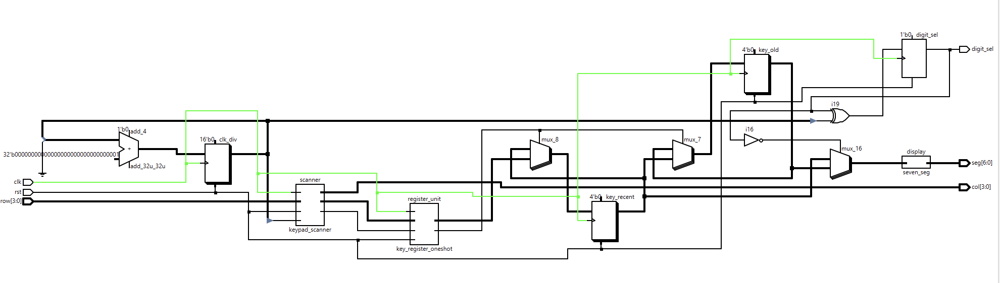
The monolithic prompt initially produced a full design that looked coherent but failed synthesis due to port mismatches and multiple drivers. When I switched to modular prompts, separating the keypad scanner, one-shot register, and display logic, the code became cleaner, more consistent, and successfully synthesized. Modularizing clearly improved correctness, readability, and debuggability.
Prompt A partially modularized on its own, but only with explicit direction did it produce well-defined module boundaries and proper FSMs. The FSM structures it used: IDLE, PRESSED, and WAIT_RELEASE with always_ff/always_combseparation were idiomatic and synthesizable, which was a pleasant surprise. Most issues came from active-low keypad logic and naming inconsistencies, which the LLM fixed once clarified.
Next time, I’d use smaller, guided prompts from the start, defining signal polarity and clock behavior early. This approach made the AI a useful co-designer rather than just a code generator and led to more reliable synthesis results.